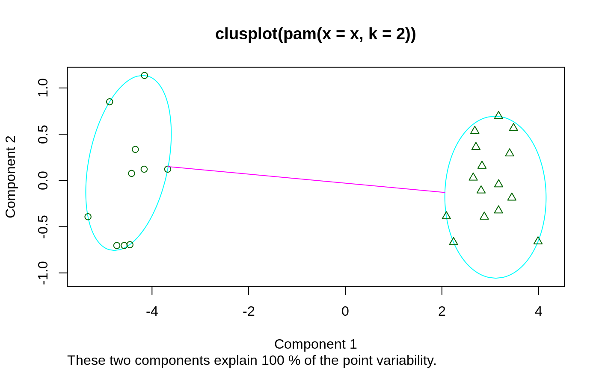
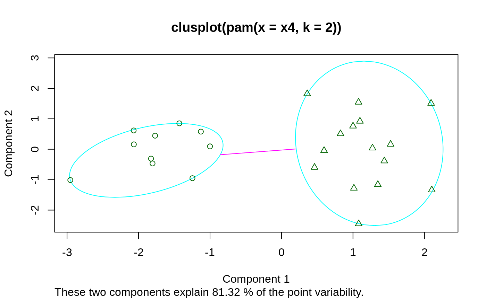

clusplot.partition.RdDraws a 2-dimensional “clusplot” (clustering plot) on the
current graphics device.
The generic function has a default and a partition method.
clusplot(x, ...) # S3 method for partition clusplot(x, main = NULL, dist = NULL, ...)
| x | an R object, here, specifically an object of class
|
|---|---|
| main | title for the plot; when |
| dist | when |
| ... | optional arguments passed to methods, notably the
|
a 2-dimensional clusplot is created on the current graphics device.
For the partition (and default) method: An invisible
list with components Distances and Shading, as for
clusplot.default, see there.
The clusplot.partition() method relies on clusplot.default.
If the clustering algorithms pam, fanny and clara
are applied to a data matrix of observations-by-variables then a
clusplot of the resulting clustering can always be drawn. When the
data matrix contains missing values and the clustering is performed
with pam or fanny, the dissimilarity
matrix will be given as input to clusplot. When the clustering
algorithm clara was applied to a data matrix with NAs
then clusplot will replace the missing values as described in
clusplot.default, because a dissimilarity matrix is not
available.
clusplot.default for references;
partition.object, pam,
pam.object, clara,
clara.object, fanny,
fanny.object, par.
## For more, see ?clusplot.default ## generate 25 objects, divided into 2 clusters. x <- rbind(cbind(rnorm(10,0,0.5), rnorm(10,0,0.5)), cbind(rnorm(15,5,0.5), rnorm(15,5,0.5))) clusplot(pam(x, 2))